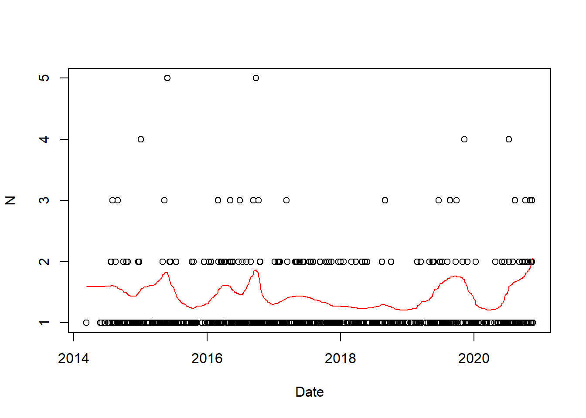
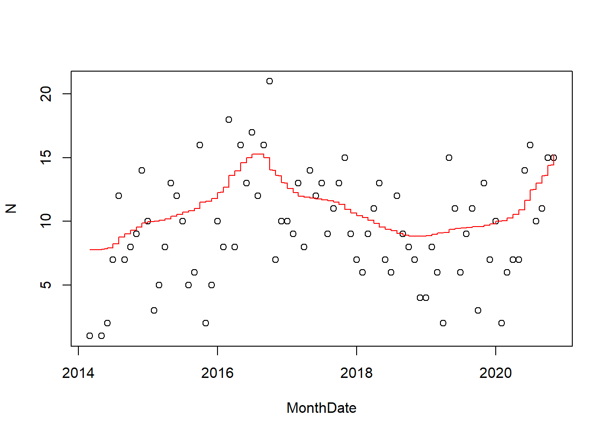
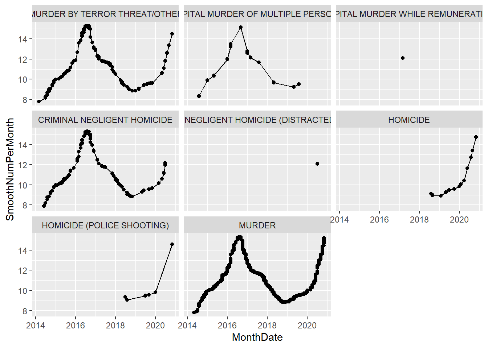
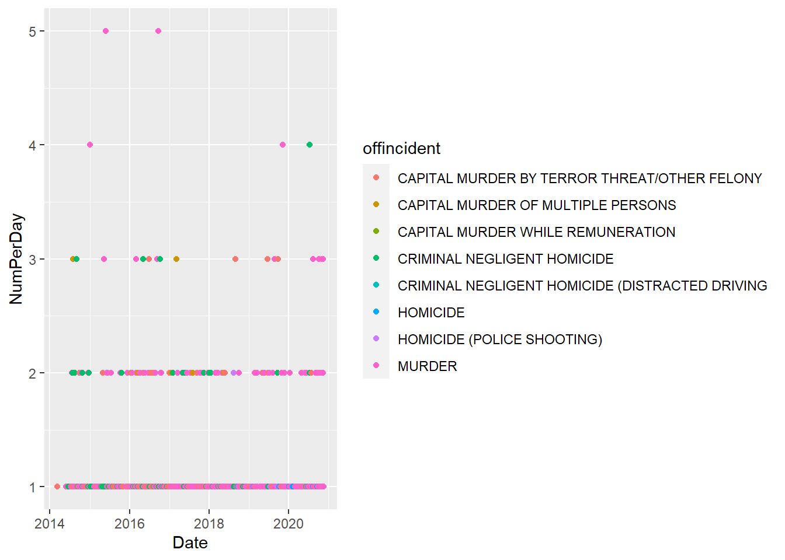
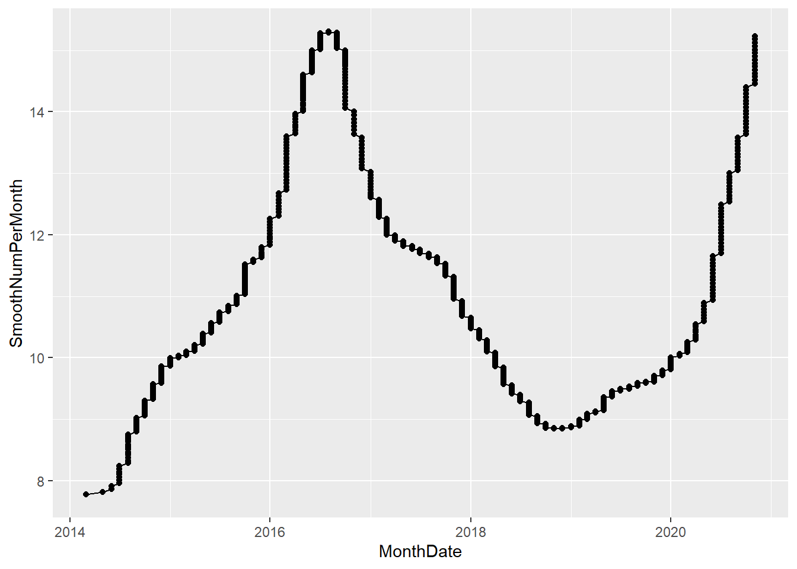
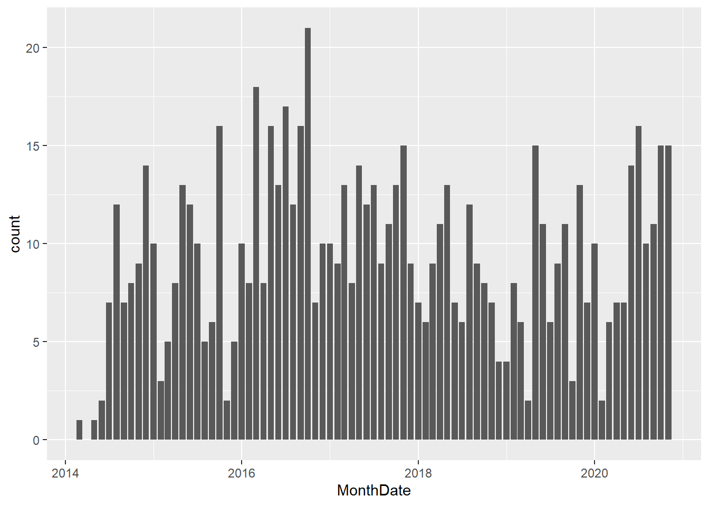
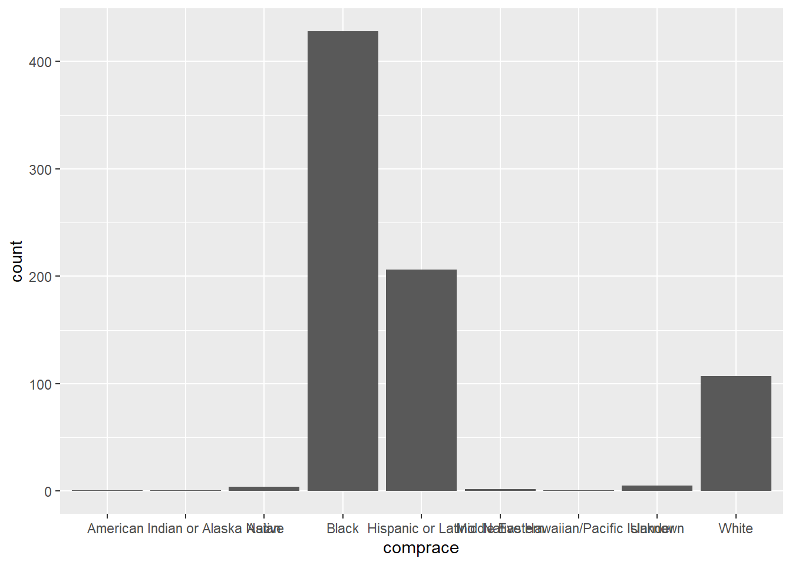

Based on the following data set from Dallas Open Data: https://www.dallasopendata.com/Public-Safety/Police-Incidents/qv6i-rri7
We extract murder incidents by looking for “MURDER” or “HOMICIDE” in the officer’s incident description.
Murder <- PI[grepl("MURDER",offincident) | grepl("HOMICIDE",offincident),]
Murder[,Date := as.Date(substr(date1,1,10))]
Murder[,MonthDate := as.Date(paste0(format(Date,"%Y-%m"),"-01"))]
setorder(Murder,Date)
Murder[,NumPerDay := .N,by = Date]
Murder[,NumPerMonth := .N,by = MonthDate]
Murder[,SmoothNumPerDay := predict(smooth.spline(NumPerDay,df = 20))$y]
Murder[,SmoothNumPerMonth := predict(smooth.spline(NumPerMonth,df = 10))$y]plot(Murder[,.N,by = Date])
lines(Murder$Date,Murder$SmoothNumPerDay,col = "red")
plot(Murder[,.N,by = MonthDate])
lines(Murder$MonthDate,Murder$SmoothNumPerMonth,col = "red")
ggplot(Murder,aes(x = MonthDate,y = SmoothNumPerMonth)) + geom_line() + geom_point() + facet_wrap(~ offincident)## geom_path: Each group consists of only one observation. Do you need to adjust
## the group aesthetic?
ggplot(Murder,aes(x = Date,y = NumPerDay,color = offincident)) + geom_point()
ggplot(Murder,aes(x = MonthDate,y = SmoothNumPerMonth)) + geom_line() + geom_point()
ggplot(Murder,aes(x = MonthDate)) + geom_bar()
ggplot(Murder,aes(x = comprace)) + geom_bar()